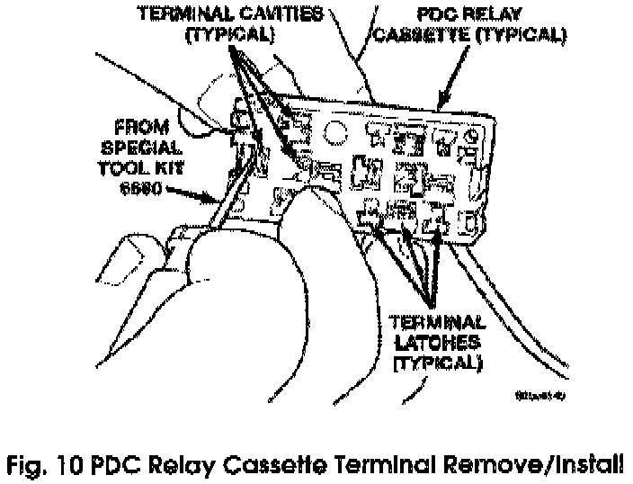

Assembly
PDC RELAY CASSETTE(1) Move the faulty PDC relay cassette with its wiring away from the bottom of the PDC housing far enough to allow the replacement relay cassette to be installed into the PDC.
(2) Using the faulty relay cassette as a guide, be certain that the replacement relay cassette is correctly oriented before installing it into the PDC housing.
(3) From the bottom of the PDC housing, align and insert the replacement relay cassette into the PDC. Press the relay cassette up into the PDC until both of the latches are fully engaged.
CAUTION:
Proper care must be taken to be certain that the wiring and terminals from the faulty PDC relay cassette are installed in the correct terminal cavities of the replacement relay cassette. To prevent mistakes it is recommended that the wiring and terminals be removed from the faulty relay cassette one cavity at a time, repaired or spliced as necessary, then installed securely into the correct cavity of the replacement relay cassette. If you are not absolutely certain into which cavity a terminal should be installed, refer to Power Distribution in the index of the service manual for the location of complete circuit diagrams covering the PDC.

(4) While pulling gently on the wire from the bottom of the faulty PDC relay cassette, use a terminal pick tool (Special Tool Kit 6680) from the top of the relay cassette to release the latch that secures the terminal in the relay cassette terminal cavity (Fig. 10).
(5) From the bottom of the faulty PDC relay cassette, remove the wire and terminal from the relay cassette terminal cavity.
(6) Make all necessary repairs and splices to the wire for the removed terminal. Refer to Wiring Repair in the index of this service manual for the location of the wiring repair procedures.
(7) From the bottom of the PDC housing, align and insert the removed wire and terminal into the correct terminal cavity of the replacement relay cassette. Push the wire and terminal up into the relay cassette terminal cavity until it is fully engaged by the latch.
(8) Repeat Steps (4), (5), (6) and (7) one wire and terminal at a time until each of the wires and terminals have been transferred from the faulty PDC relay cassette into the replacement relay cassette.
(9) Install the PDC relay wedge into the replacement PDC relay cassette.
PDC RELAY WEDGE
(1) From the top of the PDC housing, align and insert the PDC relay wedge latch arms into the correct cavities in the relay cassette.
(2) Gently and evenly press the PDC relay wedge down into the relay cassette until both of the latches are fully engaged.
(3) Install each of the removed relays into the proper cavities of the PDC relay wedge.
(4) Install the PDC housing lower cover.
PDC B(+) TERMINAL MODULE (WJ ONLY)
(1) From the bottom of the PDC housing, align and insert the B(+) terminal module into the PDC.
(2) From the bottom of the PDC housing, align and insert the two studs of the PDC B(+) terminal module through the bus bar in the PDC.
(3) From the bottom of the PDC housing, press the B(+) terminal module gently and evenly into the PDC until both of the latches are fully engaged.
(4) Install the PDC housing lower cover.
PDC HOUSING LOWER COVER
(1) Align the PDC housing lower cover to the bottom of the PDC.
(2) Press the PDC housing lower cover gently and evenly onto the PDC until each of the latches that secure the cover to the PDC is fully engaged.
(3) Engage the mounting slots on the PDC housing with the stanch ions of the PDC mounting bracket and push the unit downward until the mounting bracket latches fully engage the mounting tabs on the PDC housing.
(4) Install the battery wire harness PDC take out eyelet(s) over the two PDC B(+) terminal stud(s). (5) Install and tighten the nut(s) that secure the eyelet(s) of the battery wire harness PDC take outs to the B(+) terminal stud(s). Tighten the nut(s) to 11.3 Nm (100 in. lbs.).
(6) Install the cover onto the PDC.